What comes to your mind when somebody mentions Gujarat? Statue of Unity, Dandiya, all India Chardham portals of Dwarkadheesh, colourful traditional clothes, Delectable authentic Gujarati cuisines, great ran of Kutch and many more but there is so much more to this historic and the westernmost state of India that one visit will not be enough. With a plethora of tourist attractions and a thriving biodiversity this fascinating land holds a lot of charm which has always attracted tourists and traders from far and wide ever since the early ages. The mosaic of cultures, traditions and beliefs is clearly represented through their ethnic beauty and general way of life. From beaches and national parks to temples and historical sites Gujarat is dotted with so many unique and interesting places that you will get tired of visiting but you will never run out of places to visit.
If you are planning a visit to Gujarat but don’t know where to visit then here are a few famous tourist attractions in Gujarat which you should not miss out on exploring:
Gujarat Historical Places:
Great Rann of Kutch
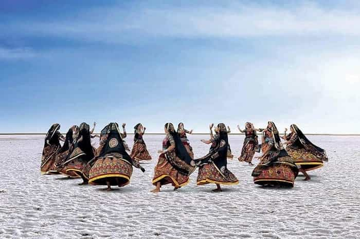
Inhabited by the Kutchi people of Gujarat and probably one of the most unique places in India, this sprawling white salt marsh of Thar Desert is one of the most incredible experiences for anyone looking to have an offbeat travel experience. You can go on a mesmerising jeep safari of Rann or visit it during the celebration of Rann Utsav. During the monsoon season this entire region gets completely submerged under water and is not the right to visit. Winter is another interesting time when you can spot flamingos here who reach here from Siberia.
Champaner – Pavagadh Archaeological Park

Located in the district of Panchmahal this UNESCO world heritage site is situated all around the historial and ancient city of Champaner. Built by sultan Mahmud Begada the entire site is adorned with various forts, Stepwells, tanks, temples, sites dating back to the chalcolithic age and so much more. A visit here will open your minds to a whole new world. The park is especially popular for its various Hindu and Muslim architecture dating back to 15th and 16th century. Walking here you will feel like you have walked into a time machine.
Lalgarh Palace And Museum

Built during the months of 1902 and 1926 this iconic and magnificently grand palace structure was constructed for sir Ganga Singh Maharaja of Bikaner. Currently parts of its are functioning as a luxurious heritage hotel there are several grand elements that makes this palace extremely royal. With small minarets, finely carved arches and properly primed and formal gardens the famous Laxmi Niwas Palace is also a part of this complex which was designed by a British architect sir Samuel Swinton Jacob.
Rani Ki Vav (The Queen’s Stepwell)
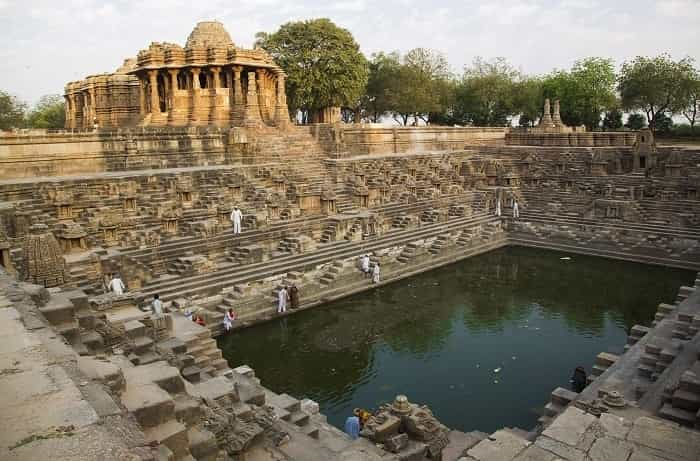
A UNESCO world heritage site and well preserved by the government of Gujarat this step well was commissioned in 1603 by the queen of king Bhimdev 1 belonging to the Solanki Dynasty. This is situated on the banks of Saraswati River but why is it a heritage site? After having being covered due to a flood it was later on excavated by the Archaeological Survey of India and their discovery was Spell binding. It is covered entirely with elaborately carved out engravings which is showcased in pristine condition and there are also some intricate and delicate artwork on every inch of the Stepwell making it unique.
Also Read: Top 09 Most Famous Iconic Stepwells in Gujarat
Dholavira / Lothal
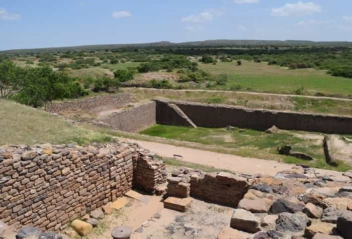
These two historical sites are located at a distance of 5.5 hours and although from faraway it may look like a mound of rocks but these rocks and small structures date back to ages ago to the beginning of one of the earliest civilisations in the world. These Indus valley civilisation sites are of immense importance which gives a small look into the bygone era which had shaped the current foundation of civilisation and visiting here is an eerie feeling but makes you appreciate the developments that the modern man has brought.
Gujarat Temples:
Dwarkadhish Mandir
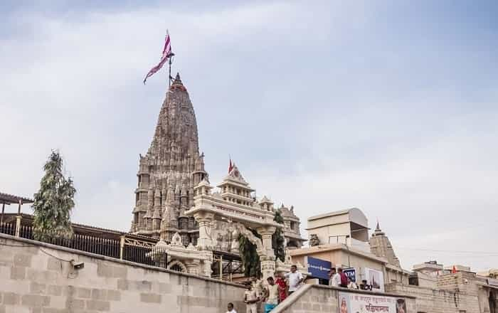
This humble looking temple which is believed to have been built by Krishnaji’s nephew over his residence place this holy hub for religion is a popular destinations since it is also a crucial part of the All India Chardham Yatra and is visited by Devoute pilgrims from all over the world. The temple can be reached after climbing a series of stairs leading up to the main entrance where the presiding deity of krishnaji is worshipped as ‘dwarkadhish’ or ‘King of Dwarka’. This 5 storied structure is an amazing piece of Chalukyan architectural masterwork and is also referred to as ‘Jagat Mandir’.
Suggested Tours
Somnath Mandir
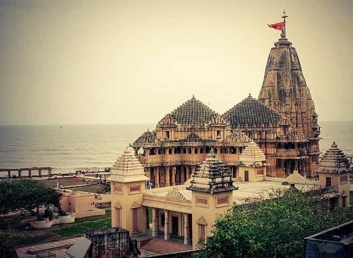
Situated in the Saurashtra region right on the western coast of Gujarat this temple is said to have been built on top of the very first out of the 12 Jyotirlinga shrines for Shiva Ji right next to the crashing waves and the roaring waters of Arabian Sea. The current temple structure is built in a grand manner under the supervision of Vallabhbhai Patel along with fine carvings and designs and has seen a violent past making it not only an important temple but also a significant historical site.
Modhera Sun Temple
As the name suggests this temple is dedicated to Surya Dev and has found a place on the banks of the river Pushpavati. No puja ritual takes place inside the temple and it is now a fully protected site by the Archeological survey of India and it has an interesting feature of a reservoir. Every inch of the temple, from pillars and ceilings to walls and steps, is adorned completely in extensively fine carvings which in itself is a sight to behold. This is also the site for the colourful and ethnic Modhera Dance Festival where along with mesmerising lightings settings girls also perform traditional dances.
Akshardham Mandir (Gandhinagar)

Just like all the other Akshardham temples in India this one in Gujarat is also one of the most magnificent looking temples. The temple is named after Yogiji Maharaj and is made stunningly using pink sandstone transferred from Rajasthan. This is a massive 23 acre complex where the devout followers of Swaminarayan believe that the soul makes its way to Akshardham post attaining moksha. The grandeur of this temple is clear through its massive pillars, large courtyards, huge archways, incredibly detailed massive gateways and more. Visiting here you will come to know the exact majestic influence that this place really is.
Rukmini Devi Temple
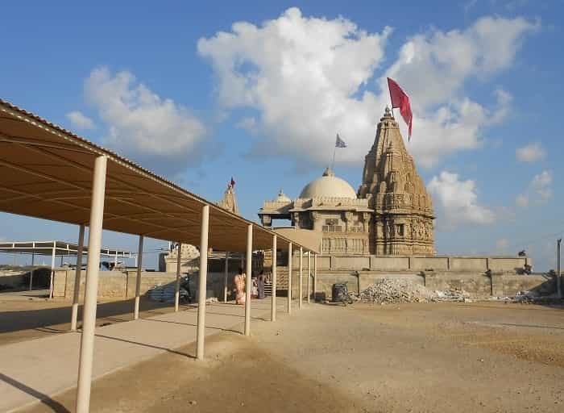
This temple which is dedicated to the Wife of Krishna Ji is said to be almost 2,500 years old and the reconstruction work here is clear which took place here over time. The temple is adorned with fine carvings and rich historical relevance along with the main sanctum housing an idol of Rukmini. The temple stands gracefully amidst a barren piece of land this place is mostly flocked by devotees of lord Krishna.
Gujarat Offbeat Destinations:
Diu
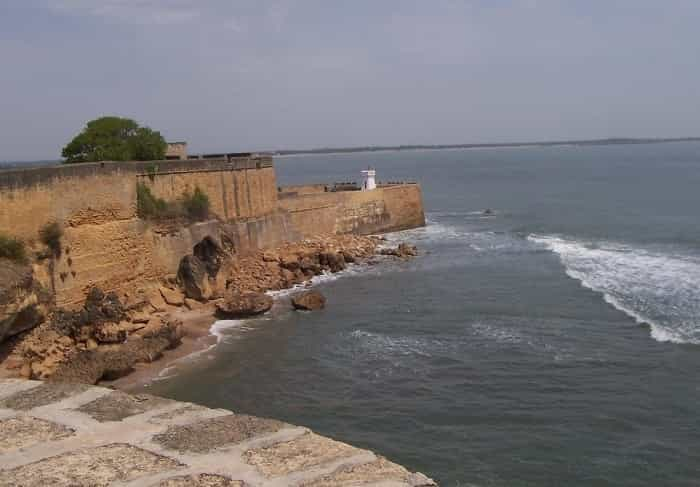
The island of Diu is a unique island retreat just off the southern coast of Gujarat. This is probably one of the most fascinating places to be if you like to have some time off from the bustle of the city and relax by the beach or spend your day exploring some interesting places like naiad caves, fort diu, sea shell museum, Gangeshwar Mahadev Temple etc. this is an idyllic place for peace seekers and party goers especially couples on their honeymoon along with being an ideal destination as a weekend getaway for the people of Gujarat.
Narala And Pirotan Island

This is a collection of 42 different small islands off the coast of Gujarat which is home to a thriving selection of marine life in India. Out of these only 1 island is open for tourist visitation and due to lack in development this place can only be reached during the times of high tide. The entire island is uninhabited and it is the perfect opportunity for you to spend some time with yourself while observing the unique marine life below.
Girmal Waterfall
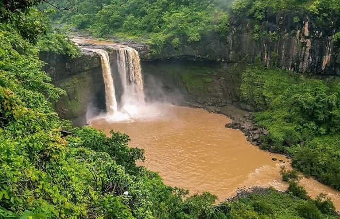
Hidden away through the lush green Dangs forest and falling from a height of 100 feet, this is the highest waterfall in Gujarat. The Girmal region is surrounded by a number of scenic view Points offering spectacular views. To get a closer view of this sight, steps are carved out near the falls. Surrounded by nature this place is a great option to go on a day out in Gujarat. If you want to take a look at a more fuller waterfall then you should Visit after the monsoon months of July and august.
Dunny Point
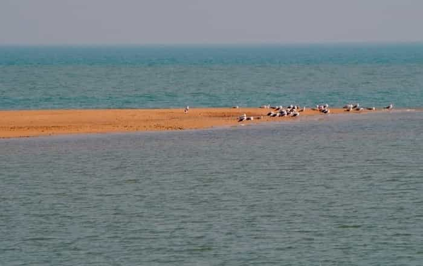
This is undoubtedly one of the most surreal experiences you will ever have in your life. This is an island off of Beyt Dwarka from here on you will only be able to see the vast expanse of the glimmering blue ocean as far as your eyes can go. Untouched from the hands of commercialisation and away from the maddening city crowd this place offers one of the most tranquil experiences where you can camp as well in the complete absence of electricity and mobile networks (except a few points).
Saputara
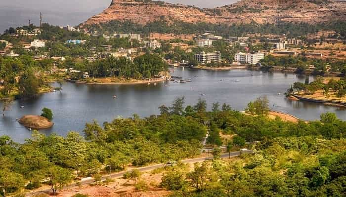
This hill station is one of the most well preserved hill station in Gujarat that offers you the opportunity to sit back, relax and take a deep breath. You will feel like all your senses are rejuvenated and it is also the perfect option for a quick getaway from Gujarat. Here you can also indulge in some various outdoor sports activities like trekking, camping, paragliding and so much more. There are several other places in this green carpeted heaven on earth like – sunset point, Saputara lake, step garden etc. each place is stunning and is worth your time.
Gujarat National Parks And Wildlife Sanctuaries:
Marine National Park

This is India’s first marine wildlife sanctuary and national park that is created on the gulf of kutch on 1980 and 1982 and can only be reached via a boat journey. Lying in between the low tide and high tide regions this place is home to a rich diversity of marine life including mudflats, creeks, estuaries, coral reefs, mangroves etc. with the water reaching till just above your ankle height you will be witnessing some giant sea anemones, animals that resemble flowers, over 40 different varieties of sponges etc.
Gir National Park
Established with the prime motive of protecting the Asiatic lion population, Gir national park is currently the only home for them and they continue to thrive here along with antelopes, deer, vultures, pythons and other animal populations. A jeep safari to Gir will allow you to take a peek into this rich biodiversity that is coexisting in this semi-arid region and if you are lucky you may even spot a lion. Be careful while visiting this national park since maintaining the peace between animals and humans is of priority here.
Blackbuck National Park

This national park is focussed primarily on the conservation of the blackbuck population of India which is depleting at an alarming rate. Covering an area of 34 sq. km. the major landscape of this national park is semi-arid and almost touches the Gulf of Khambhat on this bottom region. Along with blackbuck species the park is also home to a number of different varieties of animals like wild pigs, jackal, jungle cats etc.
Vansda National Park

Stretching up to an area of 24 sq. km this deciduous forest covering are is a part of the Western Ghats belonging to the Sahyadri ranges. You can visit this magnificent place to witness some unique collection of plants, animals and marine life. Pythons are also commonly found slithering around here along with Indian porcupines, barking deer, rusty spotted cat etc. if you want to spot some of these popular animals here then you should visit during the months of November to March.
Thol Lake Bird Sanctuary

This bird sanctuary is created around the shallow freshwater body which also contains marshes on its edge along with some scrubby forest land which is an oasis for some of the most exotic birds. This is place pans over a region of 7 sq. km. and was officially declared a bird sanctuary in 1988. The agricultural land which is situated around this place offers ample food for the birds flying to and fro this place.
Gujarat Beaches:
Nagoa Beach
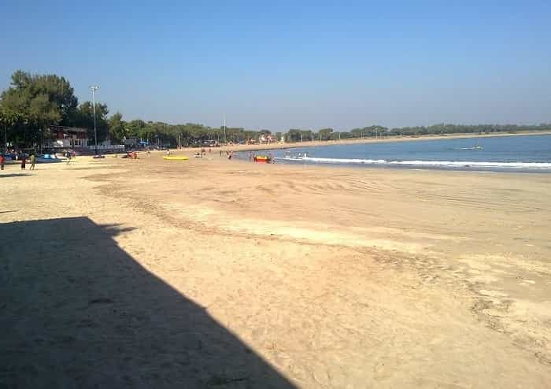
This horse shoe shaped beach holding clear blue water is an ideal place for swimming and spending some time with your family here. Bordered by the picturesque palm hoka trees this is an offbeat beach in Gujarat and is a great spot for weary tourists to spend their leisure day. You can relax here under the beach umbrellas and just gaze at the setting sun while listening to the rhythmic crashing of the waves creating a peaceful ambience.
Nargol Beach
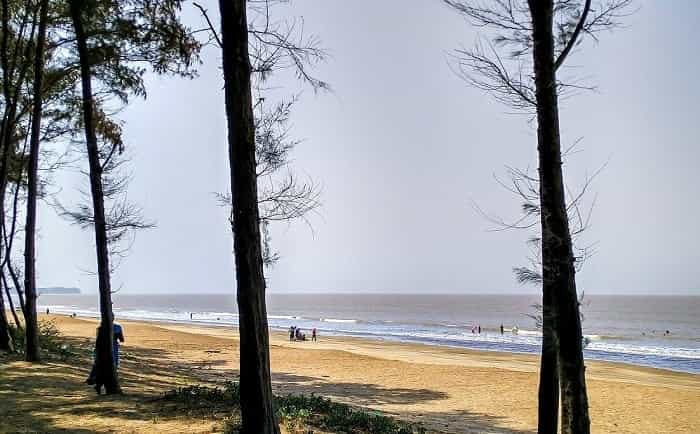
This has to be one of the most serene and peaceful beaches in Gujarat which still is unexplored. The greenery here is impeccable and it offers the perfect spot to just relax your day away and walk by the shore or spend some time with your family and loved ones. Due to the absence of tourists the beach remains free of pollution and noise. Remember to carry along some of your food and water bottles before leaving for the beach since there are no food stalls of restaurants anywhere in the vicinity of this place.
Dwarka Beach
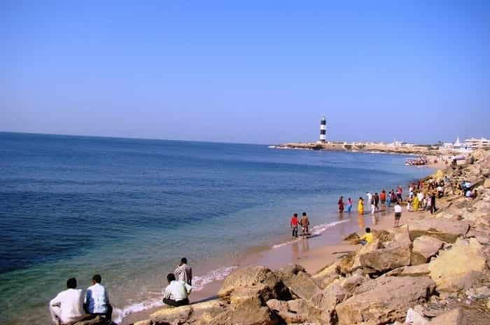
Dwarka, being an importance center for pilgrimage every place, site or structure here hold some religious or spiritual significance. in past some years the state is emerging out as one of the top tourist destinations in India as there are numerous tourist attracting places to visit in Dwarka. The beach is known for its refreshing environment and clear blue water where people visit and relax on the white sands. This beach is primarily visited by devout Hindus and there are a number of small old temples situated in its vicinity along with an 18-metre tall lighthouse which adds a lot of charm to this entire place.
Sarkeshwar Beach
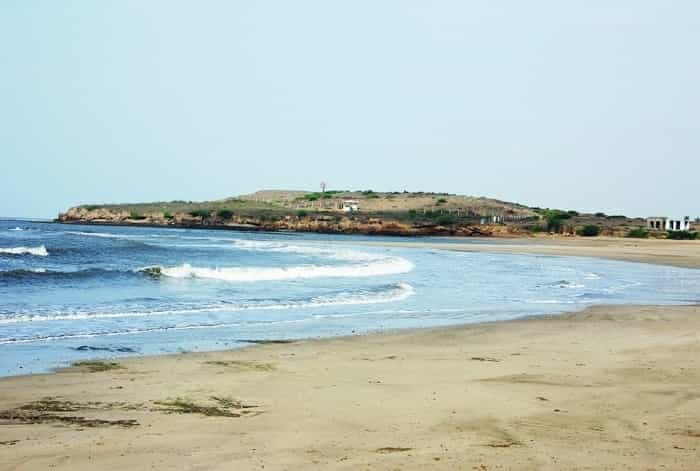
Situated in the town of Junagadh this place is another one of a number of various offbeat gems of Gujarat which has managed to stay away from commercialisation and has managed to be an unspoiled wonder of nature. In the proximity of the beach there are various other tourist attractions like Gir National park, Una and Kankai, Gayatri temple etc. a great getaway spot for both locals as well as tourists looking to relax amidst natural surroundings and a peaceful ambience.
Sivrajpur Beach
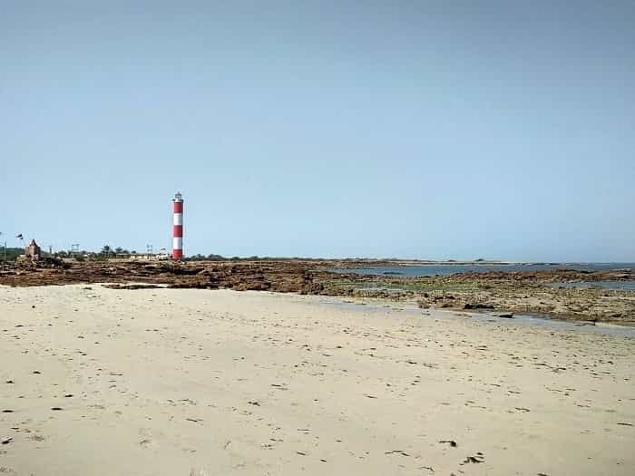
Located in Jamnagar and relatively less explored by the tourist inflow this beach offers some of the most stunning sunsets and sunrises. This is probably the only blue water beach in Goa that washes over silky sands. The people and the tourism department are not keen on developing this area as a commercial hub in order to keep the serenity of this place alive. This is also a great place to kick back relax and chill for some time with your family, loved ones and friends. The locals living near the beach use this place for their early morning jogs and the clean nature of the water is also good for swimming purposes as well.
Suggested Tours

 Call
Call WhatsApp
WhatsApp Enquiry
Enquiry